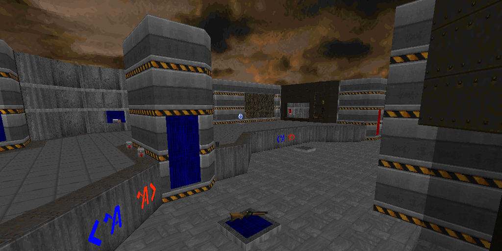

Aura CTF
AuraCTF is a map pack for DOOM II: Hell on Earth's Capture the Flag gamemode added by the source port Zandronum. The map set is designed to be fast paced and action packed, while maintaining a level of balance for competitive play. Many maps bring ideas to the CTF scene that have never been seen before! For more information, check out the forum post below.
